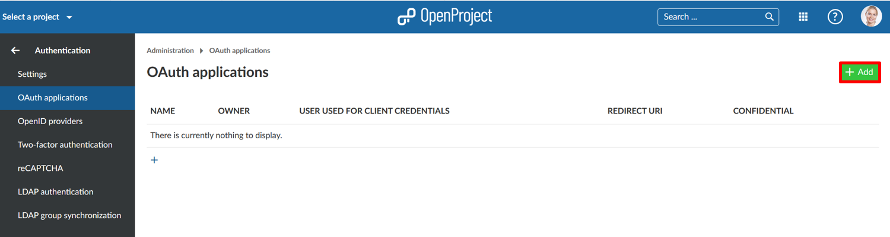
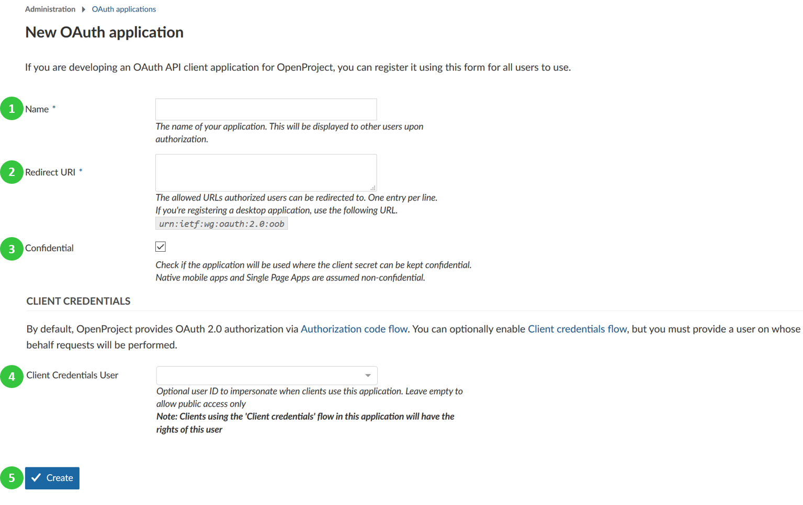
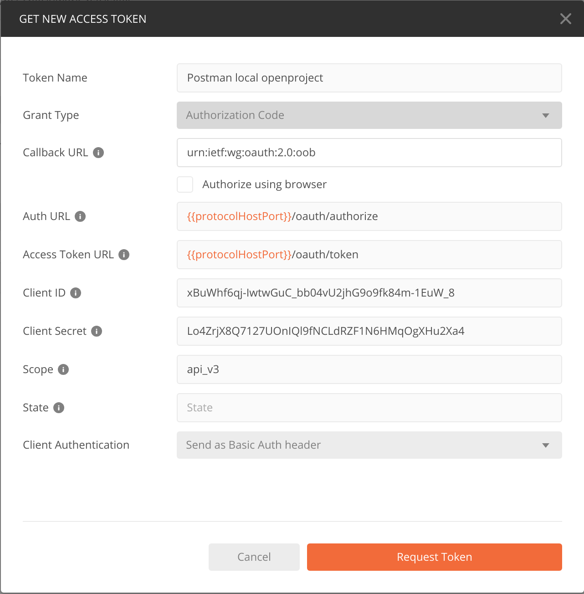

To activate and configure oauth applications, navigate to -> Administration -> Authentication and choose -> Oauth applications.
To add a new oauth application, click the green + Add button.

You can configure the following options to add your oauth application.

The authentication endpoints are at
https://example.com/oauth/authorizehttps://example.com/oauth/tokenThe following CURL command fetches all projects from the API V3:
curl --location --request GET 'https://example.com/api/v3/projects' --header 'Authorization: Bearer <your-access-token>'
Set redirect URLs to urn:ietf:wg:oauth:2.0:oob in both, for your application (see step 2 above) and
within Postman.
In Postman the configuration should look like this (Replace `` with your host,
i.e. https://example.com)

By default, the OpenProject API is not responding with any CORS headers. If you want to allow cross-domain AJAX calls against your OpenProject instance, you need to enable CORS headers being returned.
Please see our API settings documentation on how to selectively enable CORS.